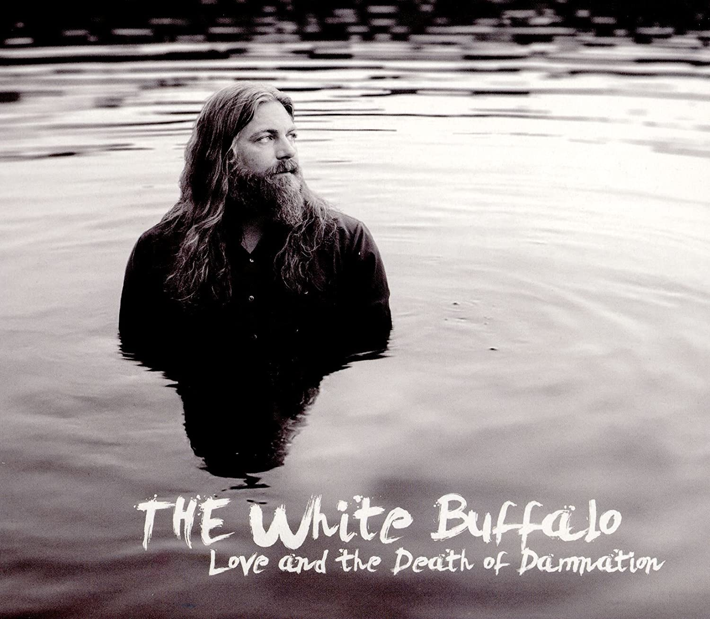

Home
Album
Origem Artística
The White Buffalo
Hogtied Like a Rodeo
(2002)
Informação sobre o Álbum!
The White Buffalo Ep
(2005)
Informação sobre o Álbum!
Hogtied Revisited
(2009)
Informação sobre o Álbum!
Prepare for Black and Blue
(2010)
Informação sobre o Álbum!
The lost and found
(2011)
Informação sobre o Álbum!
Once upon a Time in the West
(2012)
Informação sobre o Álbum!
Shadows, Greys and Evil Ways
(2013)
Informação sobre o Álbum!

Love and Death of Damnation
(2015)
Informação sobre o Álbum!
Darkest Darks, Lightest Lights
(2017)
Informação sobre o Álbum!
On The Widow's Walk
(2020)
Informação sobre o Álbum!
Son's Of Anarchy Season 1-4(2008-2011)
Informação sobre o Álbum!